Western Front
Paper 1: Medicine Through Time with the Western Front
Course Textbook
Enquiry: How has medicine changed from c1250 to the modern day?
Contents
|
Lesson 1: KT5.1: The Theatre of War: The British Sector, Trench Geography & Battles (1914–1918)
|
|
|
Lesson 2: KT5.2: The Trench Environment: Mud, Vermin & Non-Combat Illnesses (1914–1918)
|
|
|
Lesson 3: KT5.3: Battlefield Trauma: High Explosive Shrapnel, Gas Attacks & Infection (1914–1918)
|
|
|
Lesson 4: KT5.4: The Chain of Evacuation: Stretcher Bearers, RAP, Dressing Stations & CCS (1914–1918)
|
|
|
Lesson 5: KT5.5: Surgical Breakthroughs: The Thomas Splint, Wound Debridement & Mobile X-Rays (1914–1918)
|
|
|
Lesson 6: KT5.6: Lifesaving Innovations: Blood Storage, Brain Surgery & Plastic Reconstruction (1914–1918)
|
|
L1: KT5.1: The Theatre of War: The British Sector, Trench Geography & Battles (1914–1918)[[SRC_MARKER:L20_Start]]
Learning Objectives
Explain how the low-lying topography and clay geology of the Ypres Salient created an acute medical and logistical crisis.
Analyse how the architectural design of zig-zag traverses limited shrapnel injuries and localized shell explosions.
Examine why communication trenches created severe bottlenecks for stretcher bearers and casualty evacuation.
Evaluate the strategic and medical significance of the subterranean chalk caverns and Thompson’s Cave hospital at Arras.
Assess how mass-casualty battles at the Somme and Cambrai forced the RAMC to revolutionize trauma evacuation logistics.
In autumn 1914, the mobile war of movement ground to a shuddering halt in the mud of northern France and Flanders. Confronted by lethal rapid-firing artillery and Vickers machine guns, British and German armies dug thousands of miles of opposing earthworks stretching from the Swiss border to the North Sea. The British sector—defending key Channel ports and the precarious Ypres Salient—forced military doctors to operate inside waterlogged, shell-smashed ditches where every geological feature dictated life, death, and casualty evacuation.
Vocabulary Check
The Odd One Out: Circle ONE term that does not belong with the others. Explain your reasoning: What historical connection links the other terms, and why is your chosen term different?
Frontline Trench | Communication Trench | Traverse | Ypres Salient | Thompson’s Cave
Teacher Model / Pupil Reasoning:
[[SRC_MARKER:L20_Source_0]]
Source S1: Aerial Reconnaissance Photograph of British Trench System near Ypres (1917)
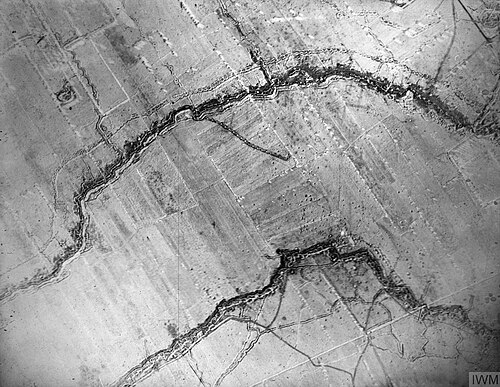
Royal Flying Corps aerial photograph showing the intricate zig-zag traverses of frontline, support, and communication trenches near Ypres, criss-crossed with artillery shell craters.
[[SRC_MARKER:L20_Source_1]]
Source S2: Photograph of a Flooded Communication Trench in the Ypres Salient (1917)
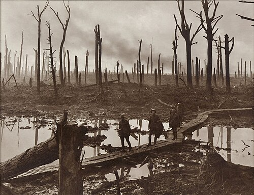
British soldiers navigating a communication trench submerged in muddy water during the Third Battle of Ypres (Passchendaele), showing duckboards floating and collapsed trench revetments.
[1.1] In August 1914, the British Expeditionary Force (BEF) deployed to France expecting a war of rapid movement, sweeping cavalry maneuvers, and decisive open-field engagements. However, the lethal reality of modern industrialized firepower immediately shattered these nineteenth-century tactical assumptions. Heavy breech-loading artillery firing high-explosive shells, combined with rapid-firing Vickers machine guns capable of discharging 500 rounds per minute, rendered open infantry advances suicidal. Following the Battle of the Marne and the "Race to the Sea," both armies attempted to outflank each other northwards until they collided with the Belgian coast, establishing a static front line defending the vital Channel ports of Boulogne, Calais, and Dunkirk—the logistical lifeline through which fresh troops, ammunition, food, and medical supplies flowed from Britain.
[1.2] The most contested and deadly sector held by British forces was the Ypres Salient in West Flanders. A "salient" is an outward military bulge into enemy territory, surrounded on three sides. At Ypres, the German army held the higher surrounding crescent of ridges (including Messines and Passchendaele), giving them commanding artillery observation over every British movement in the low-lying basin below. Geologically, Flanders consisted of dense, impermeable clay with a water table just two to three feet beneath the surface. When relentless artillery bombardments pulverized the ancient agricultural drainage dykes, the ground liquefied into an ocean of putrid mud. British frontline trenches could rarely be dug more than two feet deep; instead, soldiers were forced to pile sandbags into raised breastworks above ground level, exposed to constant artillery fire and the threat of drowning in liquid mud.
[[SRC_MARKER:L20_Source_3]]
Source S3: Aerial Reconnaissance Photograph of British Trench System near Ypres (1917)
Royal Flying Corps aerial photograph showing the intricate zig-zag traverses of frontline, support, and communication trenches near Ypres, criss-crossed with artillery shell craters.
Q1. How does the saw-tooth zig-zag design of the trenches shown in Source A explain why artillery shrapnel and enfilade fire were prevented from wiping out an entire platoon in a single blast?
[2.1] By late 1914, soldiers dug into the earth to escape the devastating hail of high-explosive artillery shrapnel and machine-gun fire. What began as shallow rifle pits evolved into an elaborate defensive earthwork system extending over 400 miles from the English Channel to the Swiss border. Frontline trenches were engineered with precise structural features: a raised firestep allowed sentries to look over the parapet into No Man’s Land; thick revetments of wood, corrugated iron, and wire netting prevented trench walls from collapsing; and wooden duckboards were laid along trench floors to keep soldiers’ boots out of stagnant, contaminated water.
[2.2] Crucially, British trenches were never dug in long, straight lines. To prevent an enemy attacker or enfilade machine gun from sweeping down the entire length of a trench, engineers designed frontline trenches with sharp, alternating right-angled bends called traverses. Aerial reconnaissance photographs (Source A) clearly reveal this distinctive saw-tooth geometry. Traverses divided the trench into short, isolated ten-yard compartments known as firebays. When an incoming high-explosive artillery shell detonated, the sharp earthen blast walls absorbed the supersonic concussion and contained hot flying metal fragments within that single bay, preventing shrapnel from slaughtering men in adjoining bays.
[[SRC_MARKER:L20_Source_4]]
Source S4: Photograph of a Flooded Communication Trench in the Ypres Salient (1917)
British soldiers navigating a communication trench submerged in muddy water during the Third Battle of Ypres (Passchendaele), showing duckboards floating and collapsed trench revetments.
Q2. Why did the deep mud and flooded conditions shown in Source B make stretcher evacuation through communication trenches a life-threatening obstacle for wounded soldiers?
[3.1] The British defensive line was arranged in four parallel tiers of depth. Nearest the enemy lay the frontline trench (50 to 200 yards from German lines), backed approximately 80 yards behind by the support trench, which housed reserve troops ready to reinforce the firestep during an assault. Several hundred yards further back lay the reserve trench, containing counter-attack battalions, supply depots, and battalion headquarters. Connecting these parallel tiers from front to rear were deep, winding communication trenches, through which relief troops, ammunition, hot rations, and medical supplies were transported under cover.
[3.2] While communication trenches provided protection from direct rifle fire, they created acute logistical and medical bottlenecks. Communication trenches were exceedingly narrow—often barely wide enough for a single soldier carrying full kit. In rainy weather, drainage failed, submerging trenches in waist-deep liquid mud and turning duckboards into floating rafts (Source B). For Royal Army Medical Corps (RAMC) stretcher bearers, maneuvering rigid six-foot wooden stretchers around dozens of sharp right-angled traverses while squeezing past oncoming reinforcements was agonizingly slow. Evacuating a single haemorrhaging casualty often took six to eight exhausting hours, turning treatable flesh wounds into lethal cases of hypothermic shock and sepsis before the patient could reach a doctor.
[4.1] In striking contrast to the waterlogged clay of Flanders, the terrain around the historic city of Arras in northern France was underlain by dry, permeable chalk. Centred on ancient Roman and medieval chalk quarries (known locally as boves), the British military discovered an extraordinary geological opportunity. In late 1916, ahead of the planned spring 1917 offensive, the British and New Zealand Tunnelling Corps were deployed to link these cavernous chalk quarries with miles of newly excavated subterranean tunnels, creating a hidden underground city capable of sheltering 25,000 soldiers within striking distance of the German lines.
[4.2] Within this subterranean labyrinth, the RAMC constructed an immense, fully equipped underground medical complex known as Thompson’s Cave. Connected directly to the front line by covered chalk saps, this underground dressing station and hospital housed 700 hospital beds, operating theatres, rest stations, a mortuary, and a kitchen. Fitted with electric lighting, piped running water, and ventilation shafts, Thompson’s Cave operated entirely immune to surface artillery bombardment. Surgeons performed emergency debridement and stabilized severe casualties in dry, warm, and sterile conditions—an unprecedented achievement that demonstrated how the British Army exploited local geology to protect medical care.
[5.1] The scale of medical trauma on the Western Front was defined by massive, set-piece battles. On 1 July 1916—the catastrophic opening day of the Battle of the Somme—the British Army suffered 57,470 casualties, including 19,240 killed, as infantry advanced across rolling chalk downland against uncut barbed wire and fortified German machine-gun nests. The sheer tidal wave of wounded men completely overwhelmed the existing evacuation chain: frontline aid posts ran out of morphine and bandages, motor ambulances broke down on rutted roads, and thousands of casualties lay on open stretchers in clearing station fields for days awaiting emergency surgery.
[5.2] The crisis of the Somme forced the British High Command and the RAMC to revolutionize their operational methods. By November 1917 at the Battle of Cambrai, where 450 British tanks broke through the Hindenburg Line on unbroken chalk ground, the medical service had evolved into a sophisticated, mechanized trauma pipeline. The RAMC deployed advance surgical teams closer to the front line, expanded fleets of motorized field ambulances, coordinated dedicated hospital trains, and established forward blood depot banks. From the flooded quagmires of Ypres to the chalk fortresses of Arras and the carnage of the Somme, the geography of the Western Front was the relentless crucible that forged modern emergency trauma medicine.
GCSE Exam Practice
Q3.
Q4.
Q5.
L2: KT5.2: The Trench Environment: Mud, Vermin & Non-Combat Illnesses (1914–1918)[[SRC_MARKER:L21_Start]]
Learning Objectives
Explain how prolonged immersion in freezing mud destroyed tissue and produced gangrene.
Analyse why mandatory officer inspections and whale oil discipline succeeded in conquering trench foot.
Examine the transmission of trench fever by body lice and the deployment of steam delousing plants.
Evaluate how RAMC sanitary sections and water chlorination prevented catastrophic dysentery epidemics.
Assess how psychiatric trauma (shell shock) evolved from being stigmatized as cowardice to clinical medical treatment.
Long before an infantryman faced enemy machine guns or artillery barrages, he fought an agonizing daily battle against the environment itself. Submerged in freezing, stagnant water saturated with human excrement and decomposing corpses, soldiers fell prey to devastating non-combat ailments. From the black, rotting necrosis of trench foot to the debilitating bone-pain of trench fever spread by swarms of body lice, maintaining the physical health of an army in the trenches demanded ruthless preventive medical discipline.
Vocabulary Check
The Golden Sentence: Choose TWO terms from the word bank. Write ONE grammatically sophisticated, historically accurate sentence connecting them using a causal conjunction (because, although, or consequently):
Trench Foot | Whale Oil | Trench Fever | Body Lice | Chloride of Lime
Teacher Model / Pupil Sentence:
[[SRC_MARKER:L21_Source_0]]
Source S1: Soldiers of the Cheshire Regiment Resting in a Frontline Trench at Ovillers (1916)
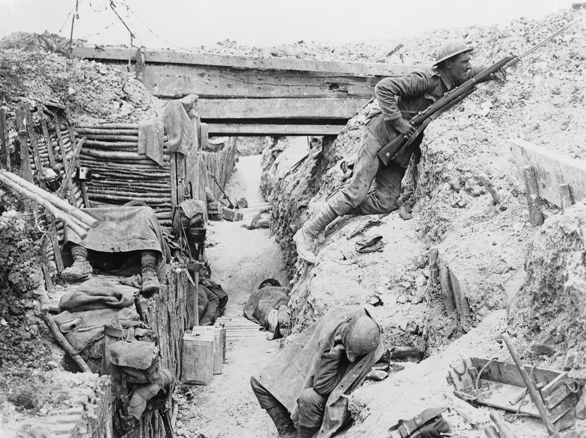
British infantrymen of ‘A’ Company, 11th Battalion, Cheshire Regiment, resting wrapped in waterproof groundsheets on the duckboards and dugouts of a captured trench at Ovillers-la-Boisselle, while a sentry remains on duty on the parapet.
[[SRC_MARKER:L21_Source_1]]
Source S2: Photograph of the Ramparts Underground Medical Dressing Station, Ypres (c.1916)
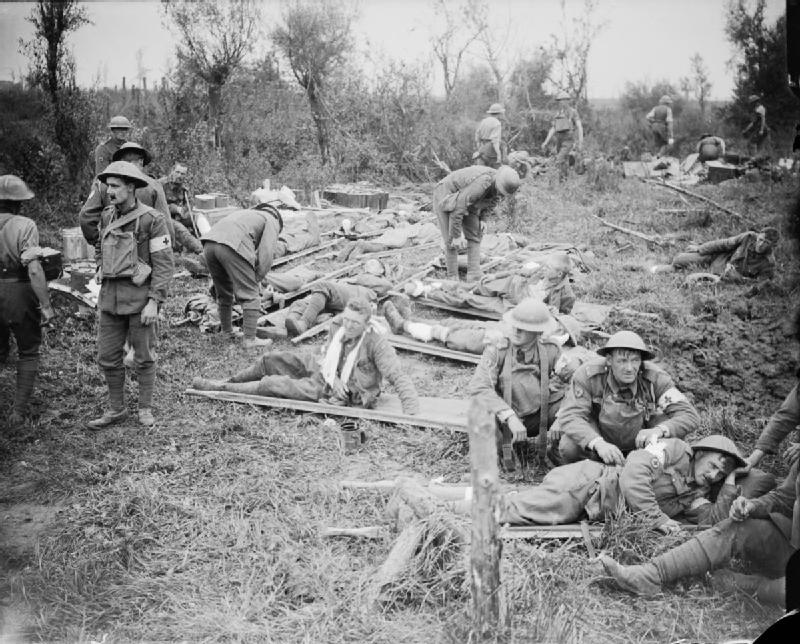
RAMC medical orderlies and stretcher bearers outside the subterranean vaulted brick entrance of the Ramparts Dressing Station, built deep into the 17th-century fortifications of Ypres.
[1.1] The physical geography of northern France and Flanders exerted a relentless, hostile pressure on the health of the British Army. The coastal plains of Belgium and northern France were naturally low-lying, reclaimed marshland underlain by impermeable, dense clay. Beneath the soil, the water table sat mere feet below the surface. Before 1914, this rich agricultural land was maintained by an intricate, fragile system of underground ceramic drainage pipes, roadside ditches, and drainage dykes. Millions of high-explosive artillery shells systematically pulverized this drainage infrastructure, turning the topsoil into a liquid soup of putrid mud.
[1.2] For British soldiers stationed in the trenches, standing in cold, stagnant water was an inescapable reality of daily life. In winter, temperatures regularly plunged below freezing, chilling the mud to ice. Furthermore, soldiers wore tight woollen puttees—long fabric strips wrapped tightly around the calves and ankles from the boot to the knee. When drenched in freezing mud, the wool shrank, acting as an unintended tourniquet that severely restricted peripheral blood flow to the lower extremities. By November 1914, medical officers noted an alarming epidemic: thousands of men were reporting to medical dugouts unable to walk, their feet swollen, numb, and drained of color.
[[SRC_MARKER:L21_Source_3]]
Source S3: Soldiers of the Cheshire Regiment Resting in a Frontline Trench at Ovillers (1916)
British infantrymen of ‘A’ Company, 11th Battalion, Cheshire Regiment, resting wrapped in waterproof groundsheets on the duckboards and dugouts of a captured trench at Ovillers-la-Boisselle, while a sentry remains on duty on the parapet.
Q1. How does Source A illustrate both the harsh environmental conditions of trench life and the practical measures, such as groundsheets and raised duckboards, adopted to protect soldier health?
[2.1] Trench Foot was a clinical condition caused by prolonged exposure to cold, damp, and unsanitary conditions, aggravated by poor circulation. Unlike frostbite, which occurs at sub-zero temperatures, trench foot developed in temperatures up to 15°C (60°F) if feet remained continuously immersed for over twelve hours. The cold caused peripheral vasoconstriction, starving skin and muscle tissue of oxygen. Feet became pale, cold, and numb; as circulation failed, the skin turned mottled blue, then necrotic black. If left untreated, secondary bacterial infections set in, leading to moist gangrene. To save the soldier’s life from fatal blood poisoning (septicemia), military surgeons had no choice but to amputate the necrotic toes or the entire foot.
[2.2] During the harsh winter of 1914–1915, over 20,000 British soldiers were medically evacuated from the Western Front suffering from trench foot. Recognizing this colossal drain on fighting manpower, British High Command implemented ruthless preventive protocols. Combat units were issued barrels of whale oil—a thick, water-repellent animal grease. Soldiers were organized into mandatory "buddy pairs," inspecting each other’s feet daily, washing them in clean water, and vigorously rubbing them with whale oil to form a waterproof barrier (Source A). Every infantryman was required to carry three pairs of dry woollen socks, exchanging wet socks for dry ones twice daily. Units constructed raised wooden duckboards along trench floors to keep boots above stagnant water. Officers who permitted trench foot cases in their platoon faced severe disciplinary charges, transforming trench foot from an unavoidable medical malady into a punishable failure of military discipline.
[3.1] While trench foot assaulted the feet, a microscopic parasite besieged the body. Body lice (Pediculus humanus corporis) infested virtually every soldier on the Western Front. Living in the warm inner seams of woollen tunics and trousers, lice multiplied at an astonishing rate, laying pale eggs ("nits") in clothing fabric. Soldiers spent off-duty hours "chatting"—running candle flames along uniform seams to pop the lice. The constant itching caused severe sleep deprivation, but the primary medical danger was Trench Fever (Pyrexia of Unknown Origin). In 1918, medical researchers proved that trench fever was caused by the bacterium Bartonella quintana, transmitted through louse faeces. When soldiers scratched inflamed bite wounds, louse excrement was rubbed directly into the broken skin.
[3.2] Trench fever caused sudden shivering, splitting headaches, severe aching in the shins, and recurring high fevers lasting up to a month, incapacitating up to 15% of an army’s strength at any one time. Because sick soldiers required weeks of hospitalization in base facilities, the disease created an intolerable logistical burden. To eliminate lice, the RAMC established extensive divisional delousing stations behind the lines. Uniforms were baked inside pressurized steam autoclaves known as "Serbian barrels" while soldiers bathed in hot carbolic baths. While these measures temporarily eradicated vermin, soldiers were frequently re-infested within days of returning to the muddy dugouts of the frontline.
[[SRC_MARKER:L21_Source_5]]
Source S4: Photograph of the Ramparts Underground Medical Dressing Station, Ypres (c.1916)
RAMC medical orderlies and stretcher bearers outside the subterranean vaulted brick entrance of the Ramparts Dressing Station, built deep into the 17th-century fortifications of Ypres.
Q2. Why did fortified subterranean medical stations like the Ramparts at Ypres shown in Source B provide essential protection against both shellfire and the unsanitary environmental filth of surface trenches?
[4.1] In flooded, static trench networks, basic human sanitation was a continuous life-or-death battle. Contaminated mud, unburied corpses, and open latrines spawned dangerous outbreaks of dysentery—a virulent bacterial infection causing agonizing stomach cramps, fever, and severe bloody diarrhea. In the frontline, men were forced to defecate into open chloride of lime buckets or shallow latrine trenches. In summer, dense swarms of bluebottle flies fed on human excrement and unburied bodies before landing directly on soldiers’ rations of corned beef and hard biscuits, spreading bacillary dysentery across entire battalions.
[4.2] To prevent catastrophic epidemics, the RAMC created specialized Sanitary Sections. These pioneer orderlies inspected latrines, enforced deep burial of refuse, and treated waste pits with quicklime (calcium oxide). Crucially, the RAMC enforced rigorous water purification: drinking water collected from shell craters or local rivers was chemically treated with chloride of lime (calcium hypochlorite) in mobile water carts, killing deadly cholera and typhoid bacilli. Furthermore, subterranean shelters like the Ramparts Medical Station at Ypres (Source B), carved deep inside seventeenth-century brick fortifications, provided clean, dry, protected underground wards, keeping infectious disease deaths below 10% of total casualties—a historic military record.
[5.1] In addition to physical diseases, the unrelenting violence of industrial high-explosive artillery bombardments triggered an unprecedented psychological catastrophe: Shell Shock. Soldiers subjected to days of continuous concussive shelling suffered catastrophic neurological and psychiatric collapses. Symptoms varied dramatically: severe uncontrollable physical tremors, hysterical blindness, sudden mutism, complete amnesia, sleep paralysis, and catatonic stupor. Coined by British psychologist Dr Charles Myers in 1915, the condition affected an estimated 80,000 British soldiers during the war, demonstrating that the human nervous system had broken down under mechanized industrial warfare.
[5.2] Initially, British military authorities severely stigmatized shell shock as cowardice, malingering, or a lack of moral fiber; tragically, over 300 British soldiers suffering from acute trauma were executed by firing squad for "desertion." However, as thousands of frontline officers and decorated veterans succumbed to identical breakdowns, the Army shifted toward a medical model. Cases were officially designated as Not Yet Diagnosed, Nervous (NYDN) to prevent court-martials. Forward rest stations were established behind the lines to provide immediate warm food, clean dry clothes, and rest; approximately 70% of traumatized soldiers returned to duty within weeks. For severe cases, specialized recovery facilities like Craiglockhart War Hospital in Edinburgh pioneered psychotherapy, dream analysis, and humane compassionate care, laying the groundwork for modern clinical understanding of Post-Traumatic Stress Disorder (PTSD).
GCSE Exam Practice
Q3.
Q4.
Q5.
L3: KT5.3: Battlefield Trauma: High Explosive Shrapnel, Gas Attacks & Infection (1914–1918)[[SRC_MARKER:L22_Start]]
Learning Objectives
Explain why high-explosive artillery shrapnel caused far more destructive and contaminated wounds than rifle bullets.
Analyse why manured Flanders soil made anaerobic gas gangrene and tetanus such deadly complications in shrapnel wounds.
Assess how the introduction of the Brodie steel helmet in late 1915 transformed battlefield head trauma survival.
Evaluate the chemical mechanisms and early British respiratory countermeasures to chlorine and phosgene gas attacks.
Compare the blister-agent properties of mustard gas with respiratory gases and explain the success of the Small Box Respirator.
The First World War was an industrial collision between high-technology steel and fragile human flesh. Over 70% of all battlefield casualties were inflicted not by rifle bullets, but by high-explosive artillery shells that tore bodies apart with jagged metal fragments. Yet the most lethal enemy was often microscopic: Flanders agricultural soil, heavily manured for centuries with animal dung, teemed with deadly anaerobic bacteria that invaded ragged wounds, spawning lethal gas gangrene and tetanus within hours of injury.
Vocabulary Check
Conceptual Classification: Categorise the terms from the word bank into the two historical boxes below:
High-Explosive Shell | Gas Gangrene | Tetanus | Brodie Helmet | Mustard Gas
Power, Governance & Warfare
Economy, Trade & Society
[[SRC_MARKER:L22_Source_0]]
Source S1: Clinical Medical Record Photograph of Severe Gangrene in Lower Limb (c.1916)
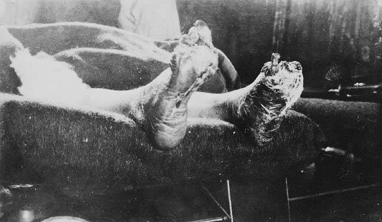
RAMC clinical photograph documenting severe necrotic tissue damage and secondary gangrenous infection in the foot of a British soldier admitted to a base hospital from the frontline trenches.
[[SRC_MARKER:L22_Source_1]]
Source S2: British Machine Gun Crew in Combat Wearing PH Gas Helmets (1916)
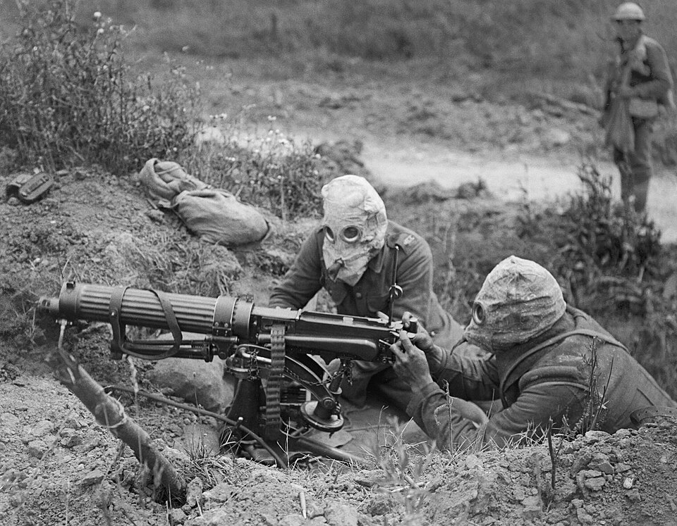
A British Machine Gun Corps crew operating a Vickers machine gun from an improvised trench position near Ovillers on the Somme while wearing issue Phenate-Hexamine (PH) anti-gas helmets with exhale valves.
[1.1] The nature of battlefield wounds on the Western Front was dictated by the catastrophic supremacy of modern industrial artillery. Unlike previous nineteenth-century conflicts where rifle musket balls inflicted the majority of injuries, over 58% of British casualties in the First World War were caused by high-explosive artillery shells and fragmentation shrapnel. Artillery batteries discharged massive ordnance: high-explosive shells packed with trinitrotoluene (TNT) detonated on contact, creating a colossal supersonic blast wave and tearing thick steel casings into thousands of razor-sharp, jagged, red-hot metal fragments of irregular shapes and sizes.
[1.2] When these jagged fragments struck human tissue at high velocity, they did not produce clean puncture wounds. Instead, they shredded flesh, severed major blood vessels, splintered bone structures into jagged fragments, and gouged out enormous craters of living tissue. Furthermore, the explosive vacuum and velocity of the metal fragment sucked foreign matter deep into the cavity: pieces of dirty woollen tunic, sodden khaki trousers, soil, and boot leather were buried into the wounded muscle. These contaminated foreign materials carried millions of deadly bacteria straight into crushed, devitalized tissue, setting the stage for virulent, life-threatening wound infections.
[[SRC_MARKER:L22_Source_3]]
Source S3: Clinical Medical Record Photograph of Severe Gangrene in Lower Limb (c.1916)
RAMC clinical photograph documenting severe necrotic tissue damage and secondary gangrenous infection in the foot of a British soldier admitted to a base hospital from the frontline trenches.
Q1. How does the blackened, necrotic tissue in Source A reveal the deadly danger of anaerobic bacterial infections like gas gangrene when soil spores contaminated deep shrapnel wounds?
[2.1] While artillery shattered bones, the soil itself delivered a lethal biological assault. Northern France and Flanders had been intensively cultivated agricultural farmland for centuries, heavily fertilized with massive deposits of cow, horse, and pig manure. Consequently, the soil was saturated with virulent, spore-forming bacteria, most notably Clostridium welchii (the cause of Gas Gangrene) and Clostridium tetani (the cause of Tetanus). Both microbes were strict anaerobes—organisms that thrive exclusively in environments completely devoid of oxygen. Deep, jagged shrapnel wounds containing dead muscle tissue, deprived of blood flow, provided the perfect incubator for these deadly bacteria.
[2.2] Within hours of injury, anaerobic bacteria multiplied inside the devitalized tissue. Gas gangrene microbes produced foul-smelling gas that bubbled under the skin, destroying surrounding healthy muscle and releasing deadly toxins into the bloodstream (Source A). If untreated, gas gangrene killed a casualty within 24 to 48 hours. Tetanus caused violent, excruciating muscle spasms, lockjaw, and respiratory paralysis. Fortunately, British medical services introduced routine tetanus antitoxin injections at Regimental Aid Posts early in the war; by administering serum to every wounded man on the day of injury, tetanus was virtually eradicated by 1915. However, gas gangrene possessed no antitoxin, forcing surgeons to invent radical surgical techniques to save lives.
[3.1] In the opening year of the war, head injuries represented the most lethal form of trauma on the battlefield. British soldiers entered the conflict wearing soft cloth peaked caps that offered zero ballistic protection. Because soldiers spent their days standing in trenches with their heads positioned just below the parapet, descending airburst artillery shells rained jagged iron balls and razor-sharp shell fragments directly onto their exposed skulls. In 1914 and early 1915, penetrating head trauma and fractured skulls accounted for a massive proportion of instant fatalities in the trenches.
[3.2] To counter this carnage, British inventor John Leopold Brodie patented the pressed-steel Brodie Helmet in autumn 1915. Stamped from a single sheet of hardened manganese steel and lined with felt and canvas, the helmet featured a distinctive wide, shallow brim designed to deflect descending artillery shrapnel away from the wearer’s face, neck, and shoulders. Distributed to British frontline troops from early 1916, the Brodie helmet slashed fatal penetrating head wounds by an estimated 75% to 80%. Interestingly, hospital admissions for head injuries actually increased after the helmet’s introduction—a famous statistical anomaly caused by the fact that thousands of soldiers who previously would have died instantly in the trenches were now surviving to reach clearing stations for medical care.
[[SRC_MARKER:L22_Source_5]]
Source S4: British Machine Gun Crew in Combat Wearing PH Gas Helmets (1916)
A British Machine Gun Corps crew operating a Vickers machine gun from an improvised trench position near Ovillers on the Somme while wearing issue Phenate-Hexamine (PH) anti-gas helmets with exhale valves.
Q2. How does Source B demonstrate how the British Army adapted technological protection to enable machine gun crews to fight continuously through deadly chemical gas attacks?
[4.1] On the afternoon of 22 April 1915, during the Second Battle of Ypres, German forces introduced a terrifying new weapon: chemical gas warfare. Over 5,700 cylinders released 160 tons of suffocating greenish-yellow chlorine gas across No Man’s Land toward French and Algerian positions. Chlorine reacted with moisture in the respiratory tract to produce hydrochloric acid, destroying lung tissue and causing victims to drown in their own secreted bodily fluids. Unprepared Allied troops initially soaked socks and cotton bandoliers in urine (ammonia neutralized chlorine) before the British issued the flannel Hypo Helmet and the chemical-impregnated Phenate-Hexamine (PH) Helmet (Source B) fitted with glass goggles and a rubber exhale valve.
[4.2] Chemical warfare escalated rapidly. In December 1915, the Germans introduced Phosgene, a colorless gas smelling of moldy hay that was six times more toxic than chlorine. Phosgene was particularly insidious because it caused little initial coughing or irritation; instead, its lethal effects were delayed, with casualties collapsing from acute pulmonary edema and heart failure 24 to 48 hours after exposure. The British upgraded the PH hood by chemically treating the flannel with hexamine to neutralize phosgene, ensuring British infantry could endure gas bombardments while maintaining frontline defensive firepower.
[5.1] The technological race between chemical delivery and protection culminated in the British invention of the Small Box Respirator (SBR), introduced from late 1916. The SBR comprised a snug rubberized face mask with glass eyepieces, connected by a flexible corrugated hose to a metal chest canister containing chemical neutralizers and granules of activated vegetable charcoal. The charcoal trapped toxic gas molecules through physical adsorption, providing almost complete respiratory protection against all known suffocating gases and establishing the standard design for modern military gas masks.
[5.2] However, in July 1917 at the Third Battle of Ypres (Passchendaele), the German army unleashed their most insidious weapon: Mustard Gas (Yellow Cross). Unlike chlorine or phosgene, mustard gas was an oily, persistent vesicant (blistering agent) that did not need to be inhaled to inflict horrific casualties. Fired in artillery shells, the oily liquid penetrated damp woollen uniforms, causing severe chemical burns, immense fluid-filled weeping blisters, temporary blindness, and respiratory tract destruction. Mustard gas contaminated muddy shell craters for days or weeks, forcing medical units to establish specialized decontamination showers and stripping stations. While chemical gas caused only 2.6% of British battlefield deaths due to effective respirators, its psychological terror and blistering injuries severely strained RAMC evacuation lines.
GCSE Exam Practice
Q3.
Q4.
Q5.
L4: KT5.4: The Chain of Evacuation: Stretcher Bearers, RAP, Dressing Stations & CCS (1914–1918)[[SRC_MARKER:L23_Start]]
Learning Objectives
Explain the vital role of frontline Stretcher Bearers and Regimental Aid Posts in stemming catastrophic haemorrhage and shock.
Analyse the tactical medical function of Advanced and Main Dressing Stations operated by RAMC Field Ambulances.
Evaluate the surgical supremacy and 3-tier triage system of Casualty Clearing Stations (CCS).
Examine the specialized treatment and convalescent role of coastal Base Hospitals and hospital ships returning to "Blighty".
Compare the medical effectiveness of motorized ambulances and converted canal barges in casualty transport.
When a soldier was struck down in the mud of No Man’s Land, his survival depended on a vast, integrated medical machine: the Chain of Evacuation. Operated by the Royal Army Medical Corps (RAMC) and heroic volunteers of the First Aid Nursing Yeomanry (FANY), this multi-stage system ferried casualties from the frontline firing line through Regimental Aid Posts, Advanced Dressing Stations, and Casualty Clearing Stations, back to coastal Base Hospitals. In a war where untreated wounds quickly succumbed to fatal gas gangrene, every hour saved in transit was the difference between life and death.
Vocabulary Check
Spot the Deliberate Error: Read the statement below. One historical fact or vocabulary concept has been deliberately falsified. Underline the error and explain the accurate historical reality below:
Chain of Evacuation | Regimental Aid Post (RAP) | Casualty Clearing Station (CCS) | Triage | FANY
Challenge: Write ONE statement containing a deliberate historical misconception using Chain of Evacuation or Regimental Aid Post (RAP). Identify and correct the error:
Teacher Model / Historical Correction:
[[SRC_MARKER:L23_Source_0]]
Source S1: RAMC Stretcher Bearers Carrying a Casualty at Boesinghe, Ypres (1917)
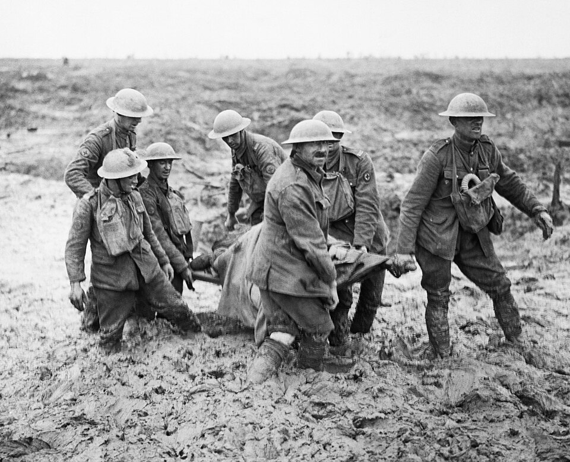
A team of six British stretcher bearers struggling through deep, liquid Flanders mud to carry a wounded soldier on a wooden stretcher near Boesinghe during the Third Battle of Ypres.
[[SRC_MARKER:L23_Source_1]]
Source S2: Converted RAMC Ambulance Canal Barge on French Waterways (c.1916)
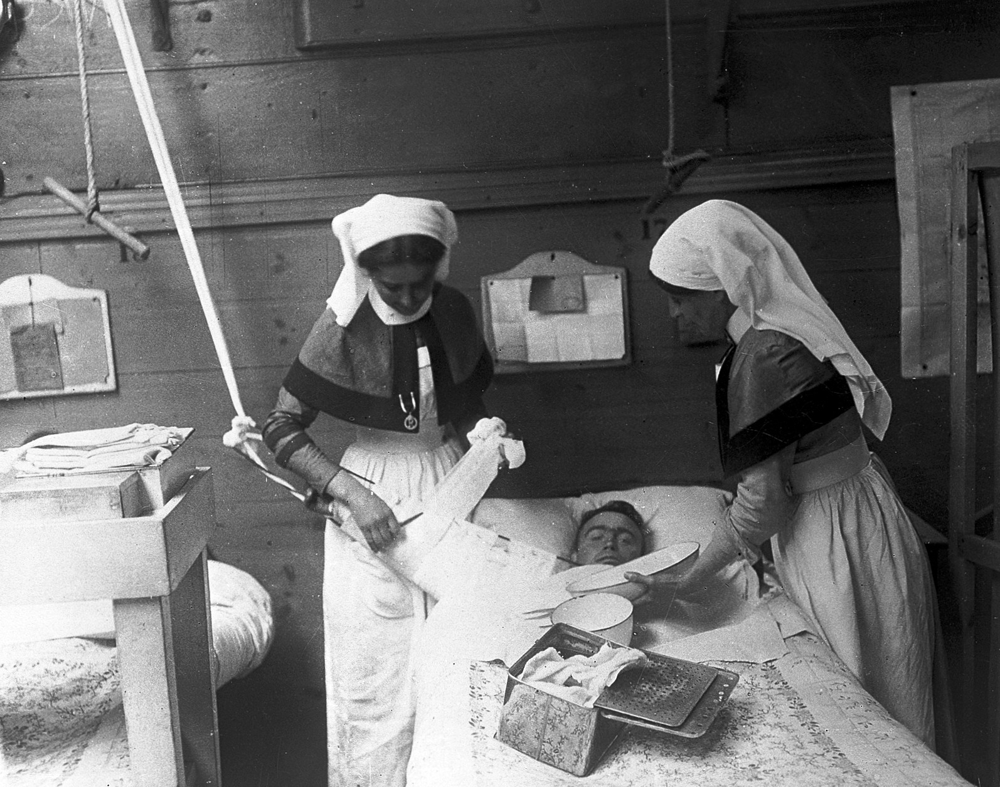
A French canal barge converted by the Royal Army Medical Corps into an ambulance barge, fitted with canvas awnings, clean hospital cots, and heating, transporting fragile post-operative casualties to Base Hospitals.
[1.1] In the brutal arithmetic of the Western Front, casualty survival was a desperate race against time. Because the manured soil of Flanders and northern France was teeming with virulent anaerobic bacteria that caused fatal gas gangrene within twenty-four hours, the Royal Army Medical Corps (RAMC) constructed an organized, continuous evacuation pipeline from the firestep back to specialized base hospitals: the Chain of Evacuation. The initial retrieval of wounded men fell upon battalion Stretcher Bearers. Each British infantry battalion of 1,000 men had just sixteen dedicated stretcher bearers (four per company), armed only with brassards, field dressings, and wooden stretchers.
[1.2] Under direct artillery fire and sniper observation, bearers crawled into shell holes to retrieve casualties and haul them back to the Regimental Aid Post (RAP). Located 200 to 300 yards behind the frontline in a communication trench dugout, ruined farmhouse cellar, or sandbagged breastwork, the RAP was staffed by the Regimental Medical Officer (RMO) and orderlies. The RAP was an emergency first-aid station, not a surgical hospital: its mission was immediate life-preservation—applying tourniquets to stem arterial haemorrhage, bandaging wounds, administering pain-relieving morphine, and giving mandatory tetanus antitoxin injections before moving men back to avoid congestion.
[[SRC_MARKER:L23_Source_3]]
Source S3: RAMC Stretcher Bearers Carrying a Casualty at Boesinghe, Ypres (1917)
A team of six British stretcher bearers struggling through deep, liquid Flanders mud to carry a wounded soldier on a wooden stretcher near Boesinghe during the Third Battle of Ypres.
Q1. Why did the exhausting physical conditions shown in Source A require six stretcher bearers instead of the usual four to transport a single casualty through Flanders mud?
[2.1] Transporting wounded soldiers from the RAP back to intermediate dressing stations was one of the most physically punishing ordeals of the war. In the cratered quagmires of Passchendaele (Source A), carrying a wounded soldier weighing twelve stone across broken ground required teams of six stretcher bearers rather than four, as men repeatedly sank waist-deep into liquid mud. A relay journey of two miles across pulverized terrain could take six to eight exhausting hours. Stretcher bearers suffered immense casualties from flying shrapnel and sniper bullets while struggling to keep their patients elevated above water-filled shell holes.
[2.2] From the RAP, casualties arrived at Advanced Dressing Stations (ADS) and Main Dressing Stations (MDS), operated by RAMC Field Ambulance units. Located one to two miles behind the front in tents, bunkers, or ruined barns, dressing stations acted as an intermediate clearing filter. Staffed by ten medical officers and orderlies, dressing stations could not perform major surgery, but they examined bandages, treated hypothermic shock with warm blankets and hot sweet tea, administered additional anti-tetanus injections, and sorted casualties into motorized transport to prevent catastrophic crowding at surgical hospitals.
[3.1] The pivotal medical hub of the entire evacuation chain was the Casualty Clearing Station (CCS). Located 7 to 12 miles behind the front line—safely beyond standard German field artillery range, but positioned strategically beside railway lines and canal networks—the CCS was the first facility equipped with sterile operating theatres, autoclaves, mobile X-ray vans, and professional military nurses of the Queen Alexandra’s Imperial Military Nursing Service (QAIMNS). The CCS was where contaminated, life-threatening trauma surgery actually took place.
[3.2] To handle thousands of casualties arriving simultaneously during major offensives, medical officers operated a rigorous system of Triage, dividing incoming men into three strict clinical categories: (1) The Walking Wounded (men with minor flesh wounds who were dressed and returned to duty); (2) Those Requiring Immediate Surgery (patients with compound fractures, ruptured femurs, or penetrating abdominal and chest wounds who had a viable chance of survival if operated on immediately); and (3) The Moribund (hopelessly wounded soldiers whose injuries were fatal, who were placed in quiet tents and made comfortable with morphine until they passed away). By prioritizing surgical resources for viable life-threatening cases, CCS surgeons saved hundreds of thousands of lives.
[4.1] Once patients were operated on and stabilized at the CCS, they were evacuated to vast Base Hospitals situated along the French coast, concentrated at major ports such as Boulogne, Le Havre, Rouen, and the massive hospital camp at Étaples. Taking advantage of maritime and railway infrastructure, coastal base hospitals were vast complexes of brick buildings, tents, and wooden huts capable of housing 2,000 to 20,000 beds. Base hospitals were staffed by senior civilian surgeons, specialist consultants, and Voluntary Aid Detachment (VAD) nurses, providing advanced post-operative care and specialized rehabilitation.
[4.2] Base hospitals were organized into dedicated specialist wings: orthopedic wards for compound fractures, specialized units for severe facial and head injuries, and isolation wards for infectious gas gangrene and dysentery. When casualties stabilized sufficiently to travel and required extended convalescence, they were loaded onto dedicated white-painted hospital ships (marked with red crosses and green hull bands) for the voyage across the English Channel back to specialized military and civilian hospitals in Britain ("Blighty").
[[SRC_MARKER:L23_Source_6]]
Source S4: Converted RAMC Ambulance Canal Barge on French Waterways (c.1916)
A French canal barge converted by the Royal Army Medical Corps into an ambulance barge, fitted with canvas awnings, clean hospital cots, and heating, transporting fragile post-operative casualties to Base Hospitals.
Q2. Why did converted canal barges like the one shown in Source B provide a superior method of transport for post-operative head and abdominal casualties compared to road motor ambulances?
[5.1] The physical survival of wounded soldiers was deeply dependent upon transport technology between medical stations. In August 1914, the British Army deployed almost exclusively with horse-drawn ambulances. Over cratered, shell-ploughed roads, horse wagons jolted agonizingly, causing jagged bone splinters to sever arteries and throwing stabilized casualties into fatal secondary shock. In response, public appeals coordinated by the British Red Cross raised funds to purchase motorized ambulance vans. Female volunteer drivers of the First Aid Nursing Yeomanry (FANY) and Red Cross drove fleets of motorized ambulances under shellfire, dramatically shrinking transit times between dressing stations and railheads.
[5.2] For the most delicate surgical casualties—men with trepanned skulls, fragile chest wounds, or newly stitched abdominal incisions—even motorized ambulances over cobbled French roads were dangerously jarring. The RAMC solved this by converting French commercial canal barges into floating ambulance wards (Source B). Fitted with warm stoves, electric lamps, clean hospital cots, and nursing staff, these ambulance barges glided smoothly and silently along northern France’s extensive canal network, carrying post-operative patients directly to coastal base hospitals without a single jolt, preserving delicate surgical sutures and saving countless lives.
GCSE Exam Practice
Q3.
Q4.
Q5.
L5: KT5.5: Surgical Breakthroughs: The Thomas Splint, Wound Debridement & Mobile X-Rays (1914–1918)[[SRC_MARKER:L24_Start]]
Learning Objectives
Explain why radical surgical wound debridement proved far more effective than chemical antiseptics in preventing gas gangrene.
Analyse how the Carrel-Dakin continuous irrigation method solved the problem of deep wound sepsis.
Evaluate how Sir Robert Jones’s deployment of the Thomas Splint reduced compound femur fracture mortality from 80% to 20%.
Examine the deployment and diagnostic power of mobile X-ray units in forward casualty clearing stations.
Assess the critical combat limitations of wartime radiography, specifically radiolucent uniform fragments and equipment fragility.
In the opening months of the First World War, an infantryman who suffered a broken thigh bone had an 80% chance of dying before ever reaching a hospital. The violent jolting of horse ambulances caused shattered bone ends to tear through the femoral artery, triggering fatal internal hemorrhaging. Furthermore, standard nineteenth-century antiseptics completely failed against the anaerobic bacteria of Flanders mud. Confronted by catastrophic mortality, military surgeons revolutionized trauma medicine through brilliant mechanical engineering, chemical irrigation, and mobile radiology.
Vocabulary Check
The Odd One Out: Circle ONE term that does not belong with the others. Explain your reasoning: What historical connection links the other terms, and why is your chosen term different?
Compound Fracture | Thomas Splint | Traction | Wound Debridement | Carrel-Dakin Method
Teacher Model / Pupil Reasoning:
[[SRC_MARKER:L24_Source_0]]
Source S1: First World War Thomas Splint for Fractured Femurs (c.1916)
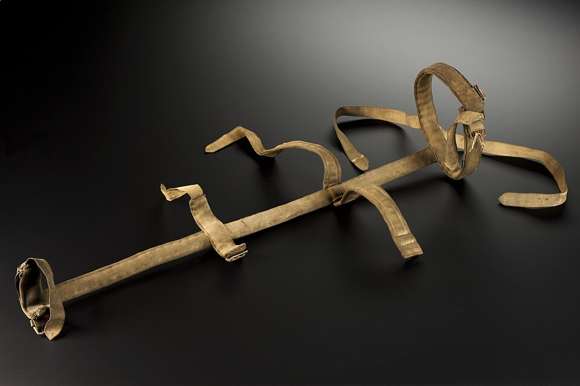
An authentic surviving British Army Thomas Splint, showing the padded oval ring fitted against the groin, rigid metal side bars, and canvas support straps used to maintain traction and immobilize broken thigh bones.
[[SRC_MARKER:L24_Source_1]]
Source S2: Photograph of an Operating Theatre at an RAMC Casualty Clearing Station (1917)
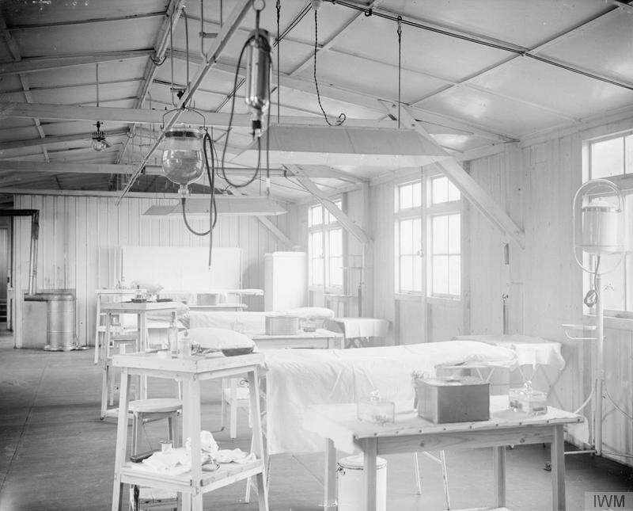
Surgeons and QAIMNS nurses performing emergency operations inside a large canvas tented operating theatre at No. 47 Casualty Clearing Station, showing sterile operating tables, autoclaves, and electric lighting.
[1.1] In autumn 1914, British military surgeons confronted an acute sepsis crisis that peacetime civilian training could not resolve. In nineteenth-century hospitals, Joseph Lister’s antiseptic techniques had controlled surface contamination; on the Western Front, however, swabbing deep shrapnel wounds with carbolic acid was completely useless. High-explosive shrapnel drove dirty khaki cloth, mud, and anaerobic soil bacteria deep into torn muscle pockets. Concentrated chemical antiseptics could not reach the deep recesses of irregular wound tracts and damaged the patient’s exposed living tissues and white blood cells faster than they destroyed anaerobic spores, allowing gas gangrene and septicaemia to flourish.
[1.2] Confronted with thousands of rotting limbs, military surgeons adopted radical Wound Debridement (surgical excision). Operating under general or local anaesthesia in forward stations, surgeons used scalpels to systematically cut away all dead, bruised, and contaminated muscle tissue around the margins of the wound, depriving anaerobic bacteria of the devitalized biological material they required to multiply. Furthermore, surgeons rejected immediate stitching, practicing delayed primary closure: wounds were left wide open and packed with sterile gauze for 24 to 48 hours to expose tissue to oxygen, halting anaerobic bacterial reproduction before the wound was surgically closed.
[[SRC_MARKER:L24_Source_3]]
Source S3: Photograph of an Operating Theatre at an RAMC Casualty Clearing Station (1917)
Surgeons and QAIMNS nurses performing emergency operations inside a large canvas tented operating theatre at No. 47 Casualty Clearing Station, showing sterile operating tables, autoclaves, and electric lighting.
Q1. How does the advanced operating theatre shown in Source B demonstrate how sterile surgical care was pushed right up to the edge of the battlefield to combat wound infection?
[2.1] To combat infection in deep, complex wounds that could not be completely excised, French surgeon Alexis Carrel and English chemist Henry Dakin invented the Carrel-Dakin Method in 1915–16. Dakin developed a mild, buffered antiseptic solution of sodium hypochlorite (dilute chemical bleach). Previous antiseptics were either too weak to kill bacteria or so caustic that they caused severe tissue necrosis; Dakin’s solution achieved the perfect chemical balance, killing anaerobic bacteria and liquefying dead tissue without burning living human flesh.
[2.2] Carrel designed an ingenious mechanical apparatus to deliver the antiseptic: a network of narrow, flexible rubber tubes pierced with tiny holes was laid deep inside the recesses of the wound. Antiseptic solution was dripped continuously from an elevated glass reservoir, flushing the wound cavity day and night in forward operating theatres (Source B). The antiseptic had to be freshly prepared in hospital laboratories every six hours because the solution rapidly degraded and lost its chemical potency. By combining meticulous surgical debridement with continuous Carrel-Dakin irrigation, surgeons arrested bacterial sepsis within days, dramatically lowering post-operative amputation rates.
[[SRC_MARKER:L24_Source_4]]
Source S4: First World War Thomas Splint for Fractured Femurs (c.1916)
An authentic surviving British Army Thomas Splint, showing the padded oval ring fitted against the groin, rigid metal side bars, and canvas support straps used to maintain traction and immobilize broken thigh bones.
Q2. Why was the simple mechanical traction provided by the Thomas Splint shown in Source A so revolutionary in reducing compound femur fracture mortality from 80% to 20%?
[3.1] In the opening year of the war, compound fractures of the femur (thigh bone) were among the most lethal injuries on the Western Front, carrying an appalling mortality rate of approximately 80%. When high-explosive shrapnel shattered the femur, the large thigh muscles went into violent involuntary spasms. The jagged, razor-sharp bone ends were pulled over each other like an internal saw, shredding muscle, severing the large femoral artery, and forcing anaerobic soil bacteria deep into the marrow. As soldiers were transported on stretchers and jolting horse ambulances, continuous bone movement caused catastrophic internal blood loss, sending men into irreversible haemorrhagic shock before they could reach a surgeon.
[3.2] In December 1915, Welsh orthopedic surgeon Sir Robert Jones was appointed Inspector of Military Orthopedics and revolutionized treatment by introducing the Thomas Splint (Source A), designed decades earlier by his uncle Hugh Owen Thomas. The splint applied continuous mechanical traction: a padded oval metal ring fitted firmly against the groin and pelvis, connected to two rigid parallel metal rods extending past the foot. By strapping the soldier’s boot to the bottom crossbar and twisting cords taut with a windlass, the leg was pulled straight. This continuous tension overcame muscle spasm, aligned fractured bone fragments, and completely immobilized the thigh during transit. When trained orderlies applied the Thomas Splint at the frontline RAP before moving a casualty, compound femur fracture mortality plummeted from 80% in 1915 to just 20% by 1917—saving tens of thousands of lives.
[4.1] Discovering the exact three-dimensional location of buried shrapnel fragments was critical to successful debridement. If a surgeon had to probe blindly with metal forceps through crushed flesh to locate a bullet, they caused massive additional tissue trauma, haemorrhage, and shock. To solve this, the British Army deployed diagnostic Mobile X-Ray Units. Inspired by pioneering scientist Marie Curie—who equipped French hospital vans known as "petites Curies"—the British War Office fitted motorized vans with portable radiography equipment, darkroom developing facilities, and petrol-driven electrical dynamo generators connected directly to the automobile engine.
[4.2] Traveling between Casualty Clearing Stations and forward dressing stations, mobile X-ray vans allowed radiologists to take two cross-angled diagnostic images (stereoscopic plates) of wounded casualties. These cross-referenced views enabled surgeons to pinpoint the precise location and depth of buried metal shrapnel and shattered bone fragments before picking up a scalpel. Radiologists also used fluorescent screens for real-time fluoroscopy, allowing surgeons to extract buried metal balls quickly with minimal incisions, dramatically reducing operating times and surgical shock during heavy offensives.
[5.1] Despite their revolutionary diagnostic power, battlefield X-rays faced severe physical and technical limitations in active combat zones. First World War radiography machines were delicate, temperamental instruments. The glass vacuum tubes (Crookes tubes) overheated rapidly after a few minutes of continuous operation and had to be rested to cool down, causing dangerous bottlenecks when hundreds of casualties flooded a CCS. Furthermore, transporting heavy X-ray vans and delicate glass photographic plates over rutted, shell-cratered roads frequently shattered electrical vacuum bulbs and fractured fragile glass developer plates.
[5.2] Most significantly, medical historians emphasize the crucial clinical blind spot of wartime X-rays: radiography could easily detect dense, radiopaque materials like lead bullets and steel shrapnel, but was completely blind to radiolucent materials. X-rays could not reveal muddy soil, trench timber splinters, or fragments of sodden woollen khaki uniform buried deep in muscle tissue. These invisible, bacteria-saturated cloth fragments remained deadly reservoirs of Clostridium welchii, meaning that an apparently successful shrapnel extraction could still result in fatal post-operative gas gangrene unless complemented by thorough manual surgical debridement.
GCSE Exam Practice
Q3.
Q4.
Q5.
L6: KT5.6: Lifesaving Innovations: Blood Storage, Brain Surgery & Plastic Reconstruction (1914–1918)[[SRC_MARKER:L25_Start]]
Learning Objectives
Explain how sodium citrate anticoagulation eliminated the need for direct donor-to-patient blood transfusion tubing.
Analyse why adding dextrose-glucose was essential to maintain red blood cell viability during refrigerated storage.
Evaluate Captain Oswald Robertson’s establishment of the world’s first military blood bank depot at Cambrai in November 1917.
Examine Harvey Cushing’s surgical breakthroughs in brain trauma, including local anaesthetics, suction, and silver clips.
Assess how Harold Gillies’s tubed pedicle technique revolutionized facial reconstructive surgery at Queen’s Hospital, Sidcup.
By 1917, the industrial violence of the Western Front was shattering human bodies in ways never before encountered in surgical history. Massive blood loss triggered fatal hemorrhagic shock before casualties could reach the operating table, while artillery shrapnel gouged out brains and ripped away soldiers’ faces. In response, brilliant visionaries transformed medicine forever: Captain Oswald Robertson established the world’s first blood bank on ice, Harvey Cushing pioneered microscopic brain surgery, and Harold Gillies sculpted entirely new living faces at Sidcup.
Vocabulary Check
The Golden Sentence: Choose TWO terms from the word bank. Write ONE grammatically sophisticated, historically accurate sentence connecting them using a causal conjunction (because, although, or consequently):
Sodium Citrate | Blood Depot | Harvey Cushing | Harold Gillies | Tubed Pedicle
Teacher Model / Pupil Sentence:
[[SRC_MARKER:L25_Source_0]]
Source S1: Captain Oswald Robertson’s Blood Storage and Transfusion Apparatus at Cambrai (1917)
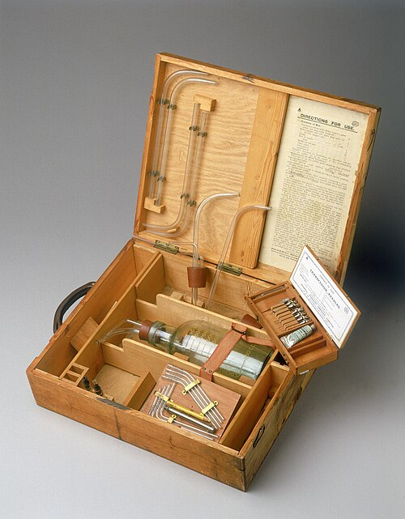
The authentic wooden ice chest, glass collection flasks, rubber delivery tubing, and sodium citrate solutions utilized by Captain Oswald Robertson to establish the world’s first blood bank during the Battle of Cambrai in November 1917.
[[SRC_MARKER:L25_Source_1]]
Source S2: Photograph of a Mobile Field Hospital X-Ray Unit in Operation (1917)
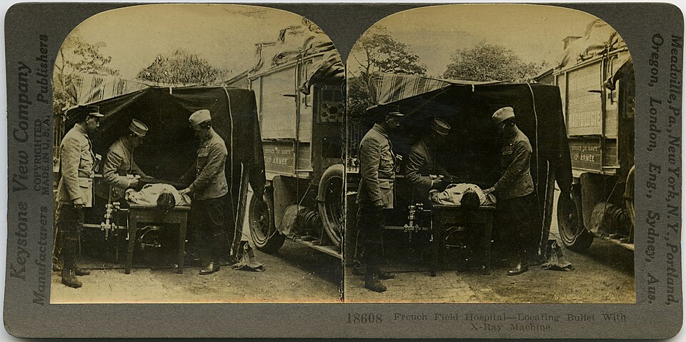
An RAMC radiographer and medical orderly using a mobile X-ray apparatus powered by a motor vehicle generator to locate metal shrapnel lodged in the skull and chest of a wounded soldier at a Casualty Clearing Station.
[1.1] As artillery firepower intensified across the Western Front between 1914 and 1916, military surgeons confronted forms of trauma that pushed human physiology to its breaking point. The most immediate killer of wounded soldiers was haemorrhagic shock—a catastrophic collapse of systemic blood pressure caused by acute blood loss from severed arteries. A casualty who lost more than two pints of blood became hypothermic, turned ashen grey, and suffered irreversible multi-organ failure within hours, long before surgeons could perform debridement or surgical excision in an operating theatre.
[1.2] Before 1914, blood transfusions were extraordinarily rare, hazardous, and impractical. Although Austrian biologist Karl Landsteiner had discovered the ABO blood group system in 1901, transfusions on the battlefield were virtually impossible because human blood naturally coagulated into solid clots within five minutes of leaving the body. Transfusions required a direct donor lying immediately beside the patient, connected arm-to-arm by a rubber tube; in a chaotic, unsanitary Casualty Clearing Station dealing with hundreds of dying men under artillery fire, finding matching live donors under bombardment was an insurmountable logistical hurdle. In 1914, Belgian doctor Albert Hustin and Argentine physician Luis Agote discovered that adding non-toxic sodium citrate to freshly drawn blood neutralized calcium ions, preventing coagulation and allowing blood to be administered indirectly via sterile glass funnels.
[2.1] While sodium citrate kept blood liquid, medical researchers encountered a critical biological barrier: citrated blood deteriorated rapidly. In 1915, American doctor Richard Weil proved that citrated blood could be kept in glass bottles in a refrigerator for a few days, but after 72 hours the fragile red blood cells broke down and lysed, releasing toxic potassium and causing severe kidney failure in recipients. Without a method to preserve living red blood cells over extended periods, medical officers could not stockpile blood in advance of major military offensives.
[2.2] The decisive scientific breakthrough occurred in 1916 at the Rockefeller Institute in New York, where researchers Francis Rous and James Turner discovered that adding a citrate-glucose (dextrose) solution provided vital nutrients for the cellular metabolism of red blood cells. By mixing freshly collected blood with sodium citrate and glucose and storing it in glass medicine bottles packed inside insulated ice chests, blood could be preserved fresh, intact, and fully viable for up to four weeks (28 days). For the first time in medical history, human blood had been transformed from a perishable fluid into a storable, transportable medical commodity.
[[SRC_MARKER:L25_Source_4]]
Source S3: Captain Oswald Robertson’s Blood Storage and Transfusion Apparatus at Cambrai (1917)
The authentic wooden ice chest, glass collection flasks, rubber delivery tubing, and sodium citrate solutions utilized by Captain Oswald Robertson to establish the world’s first blood bank during the Battle of Cambrai in November 1917.
Q1. Why was Captain Robertson’s portable ice-chest apparatus shown in Source A the critical technological breakthrough that enabled blood transfusions to be performed under battlefield conditions during surprise assaults?
[3.1] In autumn 1917, Canadian-American medical officer Captain Oswald Robertson, serving with the British RAMC, recognized that Rous and Turner’s glucose discovery could revolutionize battlefield resuscitation. Preparing for the mass tank assault at the Battle of Cambrai in November 1917, Robertson established the world’s first mobile military Blood Depot (blood bank). Robertson collected blood from healthy soldiers in advance, mixed it with sodium citrate and glucose, and packed twenty-two glass bottles into customized wooden transit chests insulated with sawdust and packed with ice (Source A).
[3.2] Setting up his forward blood depot at Casualty Clearing Station No. 48 near the Cambrai front, Robertson treated twenty-two soldiers suffering from lethal haemorrhagic shock who were expected to die from severe blood loss. Remarkably, twenty of the twenty-two men revived and made a full recovery. Robertson demonstrated that universal donor blood (Group O) could be harvested in advance, stockpiled in forward depots, and transfused to casualties at the point of greatest need, transforming resuscitation medicine and laying the direct organizational blueprint for modern civilian and military blood banking.
[4.1] Parallel breakthroughs occurred in specialized trauma surgery. Penetrating skull and brain wounds inflicted by descending artillery shrapnel carried a catastrophic 50% mortality rate on the Western Front. American neurosurgeon Harvey Cushing, stationed at No. 46 Casualty Clearing Station near Mendinghem during the grueling Third Battle of Ypres (Passchendaele) in 1917, revolutionized brain surgery through meticulous clinical innovation. Cushing recognized that standard general anaesthesia (ether or chloroform) caused massive cerebral swelling and elevated intracranial pressure, which pushed delicate brain tissue through fractured skull defects, causing instant fatal herniation.
[4.2] Cushing pioneered operating on conscious brain casualties under local anaesthetic (novocaine injected into the scalp), which kept the brain calm and unswollen. He designed an electrical suction apparatus to gently aspirate pulped, dead brain tissue, deployed powerful surgical electromagnets to extract deeply embedded steel shrapnel shards without lacerating healthy cerebral cortex, and used tiny silver clips to clamp delicate bleeding vessels. Cushing stitched the scalp closed using galeal sutures to protect against meningitis, reducing brain surgery mortality from over 50% down to 29% and operating on 45 severe casualties in a single 48-hour offensive, establishing modern neurosurgery.
[[SRC_MARKER:L25_Source_6]]
Source S4: Harold Gillies’s Tubed Pedicle Plastic Reconstruction Technique at Queen’s Hospital, Sidcup (c.1917)
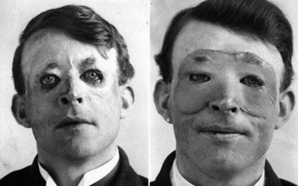
Clinical diagram and photograph documenting Harold Gillies’s revolutionary tubed pedicle technique at Queen’s Hospital, Sidcup, showing a flap of chest skin rolled into a living vascular tube to reconstruct shattered facial features.
Q2. How did Harold Gillies’s tubed pedicle technique shown in Source B solve the biological challenge of maintaining blood supply to newly grafted skin, and why was this essential for facial reconstruction?
[5.1] Simultaneously, New Zealand-born surgeon Harold Gillies pioneered modern reconstructive plastic and maxillofacial surgery. Because trench sentries looked directly over parapets, thousands of soldiers sustained horrific facial wounds from machine-gun bullets and shrapnel, having jaws, noses, and cheeks completely blown away. Surviving soldiers were severely disfigured and suffered profound social ostracization. Recognizing their plight, Gillies persuaded the War Office to establish a dedicated hospital at Queen’s Hospital in Sidcup, Kent, in 1917, designed specifically for facial reconstruction.
[5.2] Gillies confronted a major biological hurdle: large, flat skin grafts transplanted onto open facial wounds invariably rotted and died from microbial infection and lack of blood supply. To overcome this, Gillies invented the revolutionary Tubed Pedicle technique (Source B). A flap of healthy skin was cut from the patient’s chest, neck, or forehead and rolled into an enclosed, living tube of flesh with its internal blood vessels intact, while remaining attached at one end to maintain active arterial circulation. The free end was stitched to the facial defect; once new blood vessels grew into the graft over several weeks, the stalk was severed. Gillies and his multidisciplinary team performed over 11,000 operations at Sidcup, reconstructing jaws with rib bone grafts and restoring both physical anatomy and human dignity to shattered veterans.
GCSE Exam Practice
Q3.
Q4.
Q5.
Generated: 2026-10-19 15:36:42 UTC | Unit: edexcel_medicine